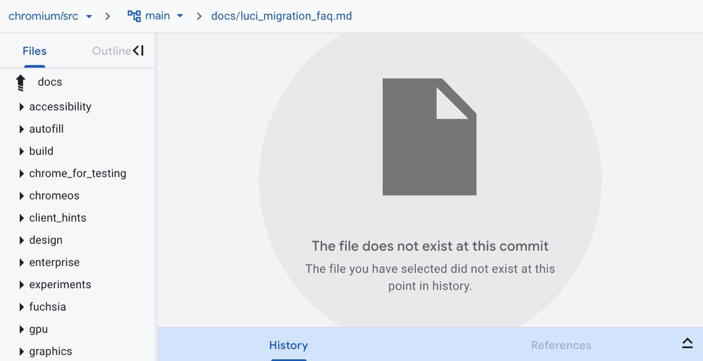
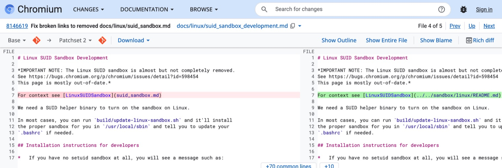

목차
첫 CL 올리기
Chromium 문서의 깨진 링크 하나를 고쳐 Gerrit에 CL을 올립니다. 아래 예시는 1번 카드 docs/linux/dependencies.md로 설명합니다. 내 카드의 파일과 경로로 바꿔 읽으세요.
0단계. 시작 전 점검 (5분)#
네 줄을 차례로 실행합니다. 하나라도 안 되면 손을 들고, 셋업이 20분을 넘기면 막혔을 때의 대안으로 갑니다.
git --version # 2.x 면 됩니다
git cl help # depot_tools 가 PATH 에 있으면 명령 목록이 나옵니다
git config --global user.email # CLA·Gerrit 에 쓴 Google 계정 이메일이어야 합니다
git credential-luci info # 같은 이메일이 나와야 합니다. 안 나오면: git credential-luci loginWindows는 PowerShell이 아니라 cmd.exe에서 합니다. git cl help가 "'cl' is not a git command"라고 하면 depot_tools가 PATH에 없는 것입니다.
1단계. 소스 받기 (1분)#
전체 Chromium은 수십 GB라 받지 않습니다. 아래 명령은 문서 폴더와 업로드 전 검사(presubmit)에 필요한 폴더만 받습니다. 10월 29일에 다시 재 보니 약 1분, 252MB였습니다.
cd ~ # Windows: cd C:\src
git clone --depth=1 --filter=blob:none --sparse https://chromium.googlesource.com/chromium/src
cd src
git sparse-checkout set docs infra build/ios build/util tools/android/infobar_deprecation tools/checkperms tools/metrics tools/python tools/resources tools/web_dev_style- 미리 받아 온 사람은
cd src,git checkout main,git pull순서로 최신화합니다. docs/밖의 파일을 고칠 때는 그 폴더를git sparse-checkout add <폴더>로 더 받습니다. 20~50초 걸립니다. 예:git sparse-checkout add components/os_crypt.fetch chromium,gclient sync는 실행하지 않습니다. 전체 소스를 받기 시작해 몇 시간이 걸립니다.
2단계. 이슈 고르기와 원인 찾기 (10분)#
- 이슈 카드에서 카드 하나를 고르고, GitHub 카드에 댓글로 "제가 할게요"를 남깁니다. 멘토가 assign합니다. 한 사람에 한 카드, 처음이면 쉬움부터.
- 깨진 것을 직접 봅니다. 렌더링된 문서
https://chromium.googlesource.com/chromium/src/+/main/<파일 경로>를 열고 그 링크를 누르면 없는 파일이라고 나옵니다. - 대상이 어디로 갔는지 찾습니다. 체크아웃하지 않은 파일도 목록에는 있습니다. 카드의 힌트에 찾는 명령과 줄 번호가 있습니다.
git ls-files | grep -i sysroot.md # Windows cmd: git ls-files | findstr /i sysroot.md결과가 1개면 옮겨진 것이라 경로만 바꾸면 끝입니다. 0개면 이름이 바뀌었거나 지워진 것이니 Code Search에서 파일 이름이나 심볼로 검색합니다. 그래도 없으면 멘토와 상의해 링크 문장을 지우거나 대체합니다.

- 상대경로 규칙. 링크는 그 .md 파일이 있는 폴더가 기준입니다.
docs/linux/foo.md에서docs/bar.md는../bar.md,components/x/README.md는../../components/x/README.md입니다./로 시작하면 저장소 루트가 기준입니다. - 절대 URL.
source.chromium.org/...;l=86같은 링크는 경로를 바꾸고,;l=뒤 줄 번호는 새 파일에서 다시 셉니다.
3단계. 브랜치 만들고 고치기 (15분)#
git new-branch fix-dependencies-sysroot-link # 브랜치 하나 = CL 하나. 이름은 자유- 편집기로 파일을 고칩니다. VS Code면
code docs/linux/dependencies.md. git diff로 바뀐 줄이 그 링크뿐인지 보고, 새 대상이 있는지git ls-files docs/linux/sysroot.md로 확인합니다.- 첫 기여면 저장소 루트의
AUTHORS파일에Gildong Hong <gildong@gmail.com>한 줄을 알파벳 순서 자리에 넣습니다. 이메일은git config user.email과 같아야 합니다. 이 줄이 없으면 업로드 때 "is not in AUTHORS file" 경고가 나고 리뷰어가 승인하지 못합니다. 따로 CL을 만들지 않고 같은 CL에 넣습니다. - 한 CL에는 한 가지 수정만 합니다. 같은 파일에서 다른 문제가 보여도 카드 댓글에 적고 넘어갑니다.

4단계. 커밋 메시지 (5분)#
git commit -a편집기가 열리면 아래 양식으로 씁니다. 영어로, 제목은 72자 이하, 제목 다음은 빈 줄, 본문은 72열에서 줄을 바꿉니다.
docs: Fix link to sysroot.md in linux/dependencies.md
docs/sysroot.md was moved to docs/linux/sysroot.md, so the link in
docs/linux/dependencies.md returns 404. Point it at the new location.
Also add Gildong Hong to AUTHORS (first contribution).
Bug: 538651940| 규칙 | 내용 |
|---|---|
| 제목 | docs: 접두어 + 현재형 동사(Fix, Point, Remove), 마침표 없음, 72자 이하 |
| 본문 | 무엇이 왜 깨졌고 어디로 옮겼는지. 옮긴 커밋이나 CL 번호를 알면 적습니다 |
| 마지막 문단 | Bug: 538651940 — 카드에 적힌 번호 |
| 넣지 않는 것 | fix:·feat: 같은 접두어, 한국어, AI 도구 서명(Co-authored-by: …) |
| AI 도구 | 써도 됩니다(Chromium AI 정책). 다만 올리기 전에 diff와 설명을 직접 이해하고, 리뷰어의 질문에는 본인이 답합니다 |
확인은 git log -1, 고치려면 git commit --amend.
5단계. 업로드 (15분)#
git cl upload -f --hashtag=hacktoberfest-seoul-2026-f는 설명 편집기와 질문을 건너뛰고 커밋 메시지를 그대로 CL 설명으로 씁니다. AUTHORS 경고 같은 presubmit 경고도 넘어가므로 4단계까지 제대로 해 둡니다. presubmit 오류(ERROR)가 있으면 아무것도 올라가지 않습니다.- 처음 올린 CL은 WIP(Work in progress)입니다. 리뷰어에게 메일이 가지 않고 리뷰어 대시보드에도 뜨지 않습니다. 출력 끝의
https://chromium-review.googlesource.com/c/chromium/src/+/<번호>가 내 CL입니다. 잊었으면git cl issue. - 멘토에게 CL 번호를 알립니다. 멘토가 내용을 보고 봇 검사(CQ dry run)를 겁니다. CQ Dry Run 버튼은 직접 누르지 않습니다. 참가자 계정은 권한이 없어 봇이 거절합니다.
올린 뒤 고칠 것이 생기면 같은 브랜치에서 고치고 git commit --amend, git cl upload -f -t "Fix typo" 순서로 다시 올립니다. 같은 CL에 패치셋 2가 생깁니다. 새 CL을 만들지 않습니다.
리뷰어 지정은 리뷰 받기에서 이어집니다.